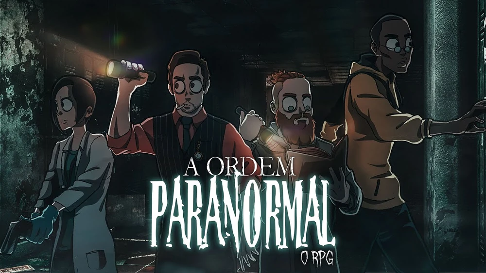

A Ordem Paranormal é a primeira temporada da série Ordem Paranormal. É uma campanha de RPG de mesa baseada no sistema de The Esoterrorists (Os Esoterroristas, em português) de Robin D. Laws. Mestrada pelo streamer e youtuber Cellbit, é protagonizada por Alexsander Kothe, Daniel Hartmann, Elizabeth Webber e Thiago Fritz.
Os dois episódios da campanha foram lançados no dia 29 de fevereiro e 7 de março de 2020 na Twitch. A série pode ser encontrada também no YouTube.
Em 18 de junho de 2022, durante o evento Segredos Revelados, foi anunciada uma adaptação da campanha para uma Graphic Novel, desenvolvida em conjunto com o roteirista Fábio Yabu, criador da série em quadrinhos online Combo Rangers e da franquia brasileira Princesas do Mar. As artes principais da graphic novel são feitas por Akila, também conhecido como Gabsu, um dos coloristas da série. Essa graphic novel, nomeada de Ordem Paranormal: Iniciação, foi lançada em 8 de maio de 2023.
A série "A Ordem Paranormal" se passa em um universo onde existem duas dimensões: o Normal e o Paranormal. O Normal é onde nós vivemos como humanos, enquanto o Paranormal é um lugar completamente diferente, onde tudo que parece impossível pode se tornar real, o que normalmente estaria associado a espíritos, demônios, entre outros tipos de anormalidades ligadas ao pós vida, por exemplo.
Esses dois locais são divididos por uma camada chamada de Membrana, que impede que o Normal e o Paranormal entrem em contato. No entanto, essa Membrana pode se enfraquecer com o aumento do medo do sobrenatural, levando monstros horrendos e muito perigosos a invadirem nossa realidade. Esse fenômeno geralmente ocorre em locais bem específicos, propensos à percepção de medo, como hospitais abandonados, casas antigas e sanatórios desativados.
Ao redor do mundo inteiro diversos grupos se formaram, buscando enfraquecer a Membrana o máximo possível, a fim de destruí-la e levar à fusão das dimensões, com o objetivo de buscar seus próprios desejos ou, quem sabe, cumprindo um propósito maior. Os membros desses grupos são chamados de Ocultistas (nessa época, Esoterroristas).
Para impedir que o caos se instale, uma organização global secreta foi criada: a Ordo Realitas ("Ordem da Realidade", nessa época chamada de Ordo Veritatis, "Ordem da Verdade"). Pessoas comuns que vivem vidas duplas para impedir os atos Ocultistas, que têm como objetivo o aumento do contato entre a população com o paranormal, aumentando seu medo e, consequentemente, enfraquecendo a membrana e permitindo a interferência do paranormal.
A história começa na madrugada do dia 29 de fevereiro de 2020, quando a vizinhança da Escola Nostradamus ouviu um grito aterrorizante vindo de dentro do prédio, que horas antes havia sido consumido pelas chamas de um incêndio de origem desconhecida. Isso leva a Ordo Realitas a convocar os membros novatos Elizabeth Webber, Thiago Fritz e Daniel Hartmann para investigar o local do ocorrido, onde se suspeita da presença de atividade paranormal. Logo, Alexsander Kothe se junta à equipe, primeiramente apenas como um suspeito, pelo fato de ter relação com os membros ocultistas da escola. Porém, mais tarde é descoberto que Alex é, na verdade, uma vítima de um ritual de apagar memória.
Três detetives paranormais são convocados para investigar um misterioso caso de um bombeiro que foi encontrado sem vida numa escola.
A primeira missão da Ordem da Verdade chega ao confronto final.